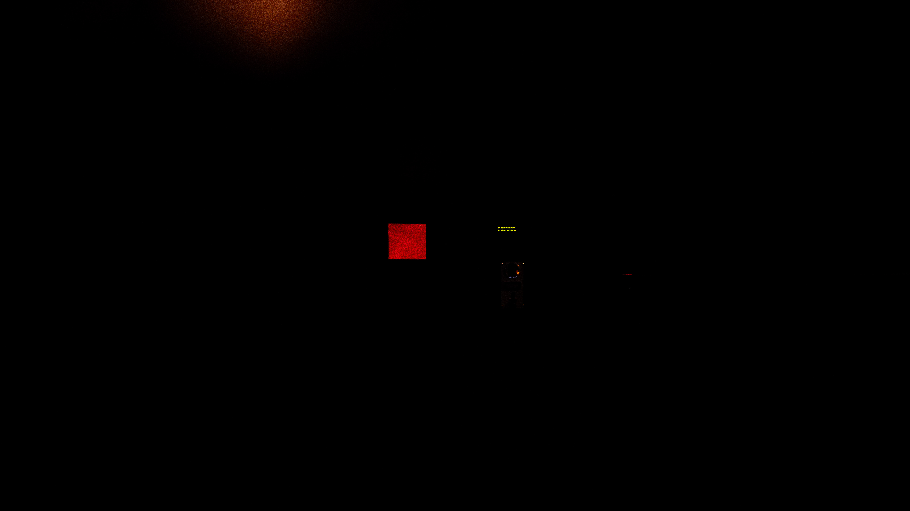
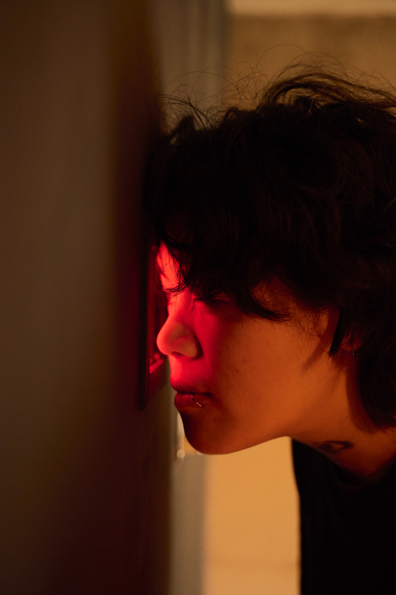
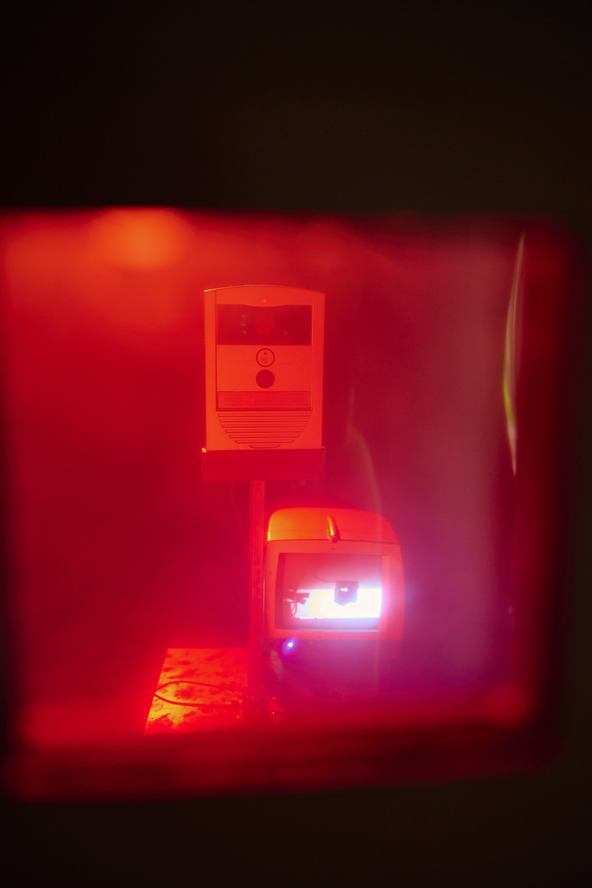
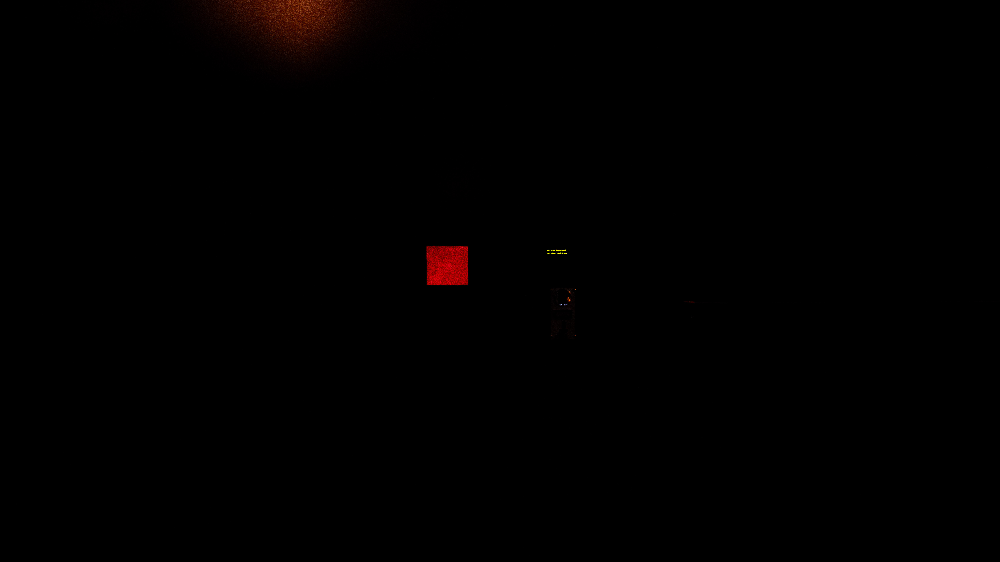
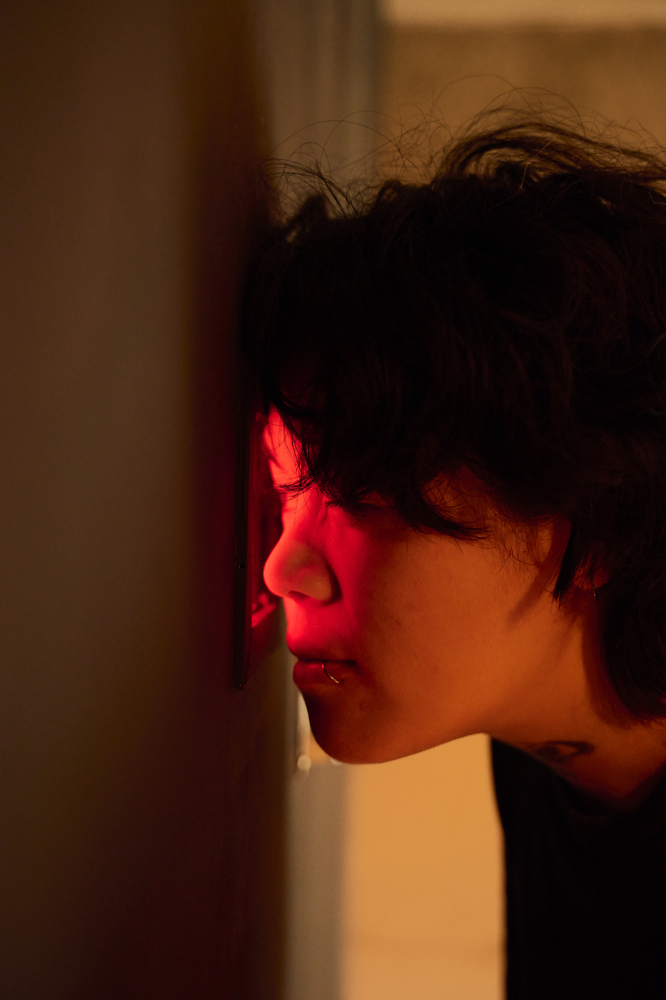
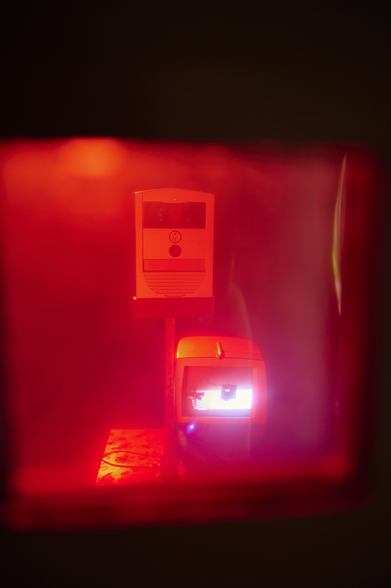

Thanks for Watching
Thanks for Watching is an installation that stages and subverts the act of spectatorship. Visitors enter a dark, curtained space where they’re invited to pay—by coin or card—to briefly look through a small window. Behind the window appears a mirrored red room, lit theatrically, containing a surveillance camera and a screen. As the camera slowly turns to face the viewer, the screen reveals their own image, placing them unexpectedly at the center of the spectacle.
What feels like a moment of private looking is quietly captured by the system: a photo is taken and used to generate a poetic AI-written description of the participant. This text is then shown outside the installation on a public LED ticker, turning each visitor into the subject of the next viewer’s curiosity.
By weaving together payment systems, theatrical framing, surveillance tools, and generative AI, the work explores how looking is mediated, commodified, and redirected. Thanks for Watching turns the desire to see into a loop of exposure—where the viewer becomes content, the system becomes the storyteller, and no one remains outside the frame.
 




